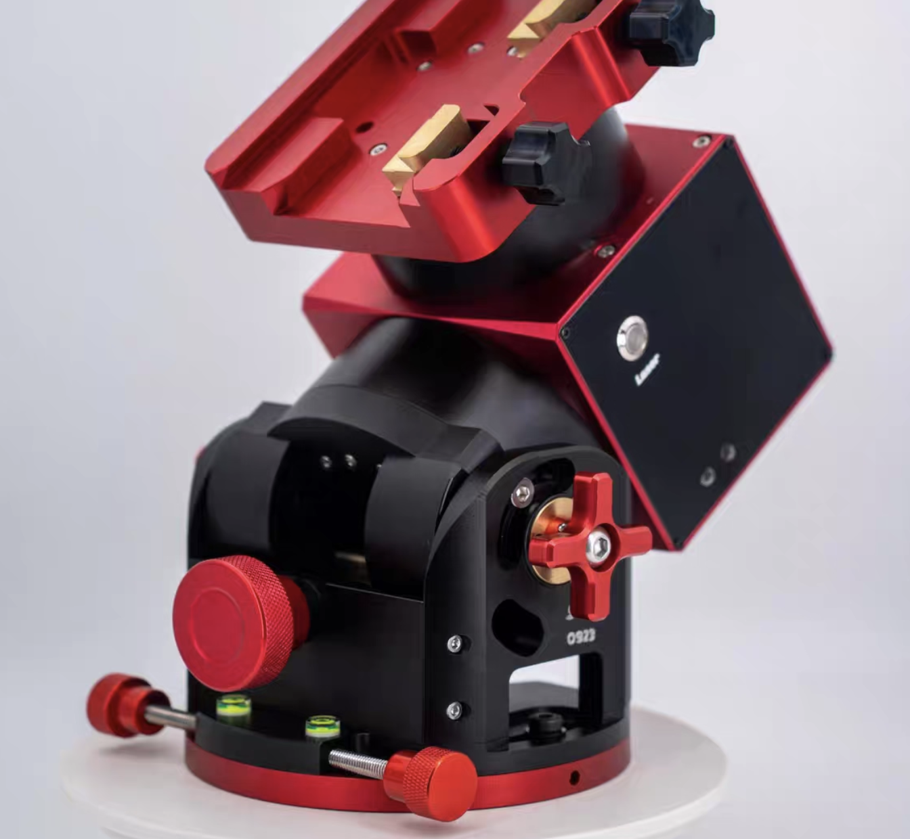
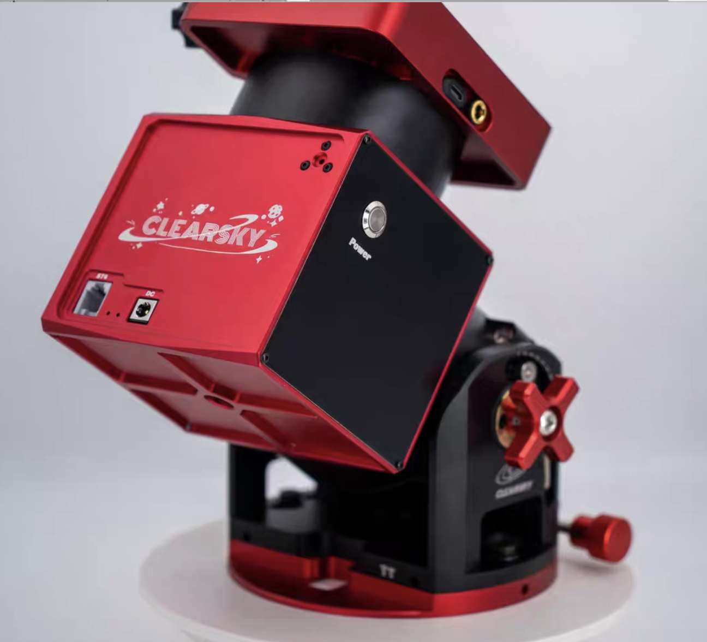

加入我们
如果你也对这个烧钱且费力的项目感兴趣.....那就让我来先为你介绍一下拍摄的设备吧
赤道仪


赤道仪在天文摄影中的作用，就是让相机“跟着星星一起走”。因为地球一直在转，如果不用赤道仪，星星在长曝光里会被拉成一条线，看不清细节。而赤道仪会以相反方向缓慢转动，让星星在画面里保持不动，这样你才能进行长时间曝光，拍出亮度更高、细节更丰富的星云和星系。同时它还能稳定地追踪目标，让多张照片能准确堆叠，最终得到清晰、干净的天文影像。
相机
普通相机和冷冻相机皆可，冷冻相机对于常规相机的升级点在于热噪点的减少，因为通常来讲我们拍摄需要300s及以上的曝光时间。冷冻相机可以更好的控制CMOS的温度，使其在一个稳定的范围内，最终成片的品质也更好
主镜
望远镜里最大的那块反光镜，负责把来自天体的微弱光线尽可能多地收集起来，并聚焦成清晰的影像。把主镜想成“装光的盆”。宇宙的光非常弱，你要用一个大盘子去“接光”。盘子越大，你接到的光越多，看到的星云、星系就越亮、越细节
评论